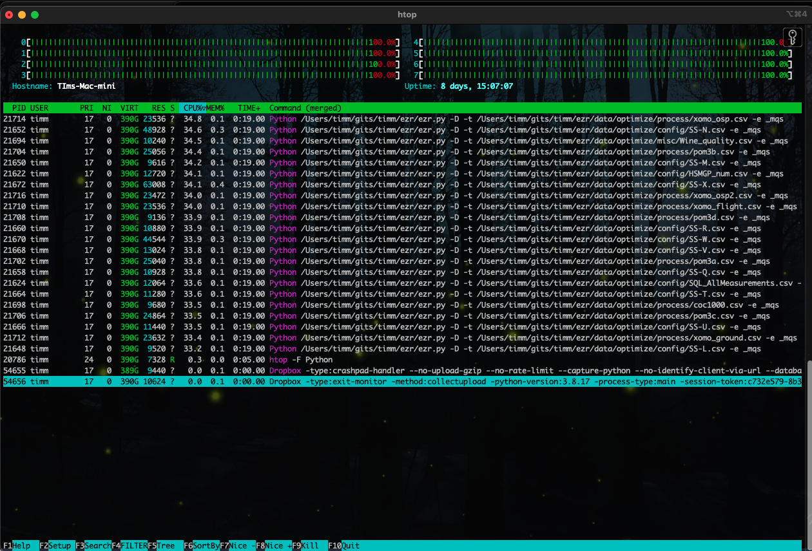

csc 591-024, (8290)
csc 791-024, (8291)
fall 2024, special topics in computer science
Tim Menzies, timm@ieee.org, com sci, nc state
home :: timetable :: syllabus :: groups :: moodle :: license

Howework2
What to hand in
Output from Part 8. Answers to Questions 9.10,11. All in one pdf file.
Note
The following works for LINUX and Mac. Windows users, please join in a discussion at windows. Or, don’t use windows and use codespaces on Github.
(If using codespaces on Github, carefully monitor your monthly costs using [this link])https://docs.github.com/en/billing/managing-billing-for-github-codespaces/viewing-your-github-codespaces-usage)
- Students in prior years report that codespaces costs just a few dollars per months.
- That said, it is possible to design a nasty experiment that consumes much more $$$. Caveat Emptor.
- Update your code from http://github.com/timm/ezr. Remember to use the 24Aug14 branch. Do not edit my files.. Instead write an extension (see last week on how to write an extension).
git clone https://github.com/timm/ezr/
git checkout 24Aug14Install the htop monitor so you can track executions (Windows users many have an equivalent tool).
Generate a run file for the “clusters2” action.
mkdir -p ~/tmp/clusters2
make Act=clusters2 actb4 > ~/tmp/cluster2.shEdit that file. Using the “#” character, comment one very line EXCEPT those that mention SS-*.csv. Also comment out the lines than mention SS-W, SS-X SS-N (cuase these are slow to run),
Run that file. You will not see any output for a minute or two.
bash ~/tmp/clusters2- Monitor with execution with “htop -F Python” or some equivalent.

- If, after 30 minutes elapsed time, there are still jobs running,
kill them.
- If you kill jobs, delete any output file corrupted by that kill (i.e. edit all the ~/tmp/clusters2/*.csv files looking for strange last lines).
- Generate a report of all the Go to the output directory and type the following commands:
% cd ~/tmp/clusters2
% grep k1 *.csv | cut -d, -f 3 | sort -n > /tmp/k1
% grep k2 *.csv | cut -d, -f 3 | sort -n > /tmp/k2
% grep k3 *.csv | cut -d, -f 3 | sort -n > /tmp/k3
% grep k5 *.csv | cut -d, -f 3 | sort -n > /tmp/k5
% grep mid *.csv | cut -d, -f 3 | sort -n > /tmp/mid
% paste /tmp/k1 /tmp/k2 /tmp/k3 /tmp/k5 /tmp/midThe results should look like this. Here, we guess a goal value by clustering the data then for each test instance (a) finding its relevant cluster; then (b) using either the k=1,2,3,5 neighbors closest neighbors (or the mid-point of that cluster).
k=1 k=2 k=3 k=5 mid
==== ===== ==== ===== =====
-0.42 -0.21 -0.34 -0.28 -0.92
-0.07 -0.10 -0.16 -0.24 -0.62
-0.03 -0.03 -0.09 -0.19 -0.36
-0.02 -0.02 -0.05 -0.19 -0.22
-0.01 -0.01 -0.03 -0.18 -0.18
0.00 0.00 -0.02 -0.06 -0.17
0.00 0.00 -0.01 -0.05 -0.13
0.00 0.00 -0.01 -0.02 -0.12
0.00 0.00 -0.01 -0.01 -0.12
0.00 0.00 0.00 0.00 -0.11
0.00 -0.00 0.00 0.00 -0.11
0.00 -0.00 0.00 -0.00 -0.08
-0.00 -0.00 0.00 -0.00 -0.07
-0.00 -0.00 0.00 -0.00 -0.02
-0.00 -0.00 0.00 -0.00 -0.02
-0.00 0.01 0.00 0.01 -0.02
-0.00 0.01 -0.00 0.01 -0.01
0.01 0.01 -0.00 0.03 0.03
0.01 0.03 0.01 0.04 0.03
0.01 0.05 0.01 0.05 0.07
0.02 0.05 0.01 0.05 0.20These are all “z” scores; i.e. (x - mid)/sd. Note
that:
- All columns are sorted. The middle values are close to zero. i.e. usually we can predict very well.
- According the Cohen, differences less than 35% of a standard deviation are a “small effect” (i.e. trivial). Note that most of our numbers are trivial.
Questions (to hand in)
- clustering:
- How does the
predictfunction in ezr.py make a prediction (predict is called inside theclusters2function)? - What might be faster to run? K-th nearest neighbors in all the data? k-th nearest neighbors in a leaf cluster? or just using the value of the mid point of each cluster? Justify your answer.
- What might be more accurate (for prediction)? K-th nearest neighbors in all the data? k-th nearest neighbors in a leaf cluster? or just using the value of the mid point of each cluster? Justify your answer.
- Check your last answer as follows.
According the Cohen, differences less than 35% of a standard deviation are a “small effect” (i.e. trivial). After discounting small effects, what do you observe for part (8) about the relative accuracy of prediction using k=1,2,3,5 neighbors (or just the mid=point)?
- How does the
- regression, classification:
- in terms of tabular data and inputs and outputs, how is regression and classification same/different?
- Given an algorithm that can find (say) five nearest neighbors to a test case, how could you implement regression and classification (usually basically the same code)?
- multi-objective:
- list three SE problems with 3 competing goals (each);
- normalization: look at the code
def chebyshev. Whey do we normalize the goal values? - entropy:
- write down for formula for entropy. Explain all terms.
- show the calculation of the entropy of a set of eight apples and four oranges (show all working).
- standard deviation:
- In an ascii diagram, draw two gaussian curves (bell-shapped), where curve one has twice the mean and half the standard deviation of the other.
- Write down the formula for standard deviation. Explain all terms.
- Show the calculation of standard deviation for the set {1,1,2}. You can leave the answers in a fraction form.
- distance: define and distinguish Euclidean from the Chebyshev distance.
- Bayes Classifier: Ignoring any low frequency
factors (like m or k), compute the following. Show all working:
- prior(no)
- prior(yes)
- Looking data just from outlook and the play! column, jdp you predict
yesornofor the following. Show all working.- outlook=overcast
- humidity=normal
outlook ,temperature ,humidity ,windy ,play!
======= ========== ========= ====== =====
sunny ,hot ,high ,FALSE ,no
sunny ,hot ,high ,TRUE ,no
rainy ,cool ,normal ,TRUE ,no
sunny ,mild ,high ,FALSE ,no
rainy ,mild ,high ,TRUE ,no
overcast ,hot ,high ,FALSE ,yes
rainy ,mild ,high ,FALSE ,yes
rainy ,cool ,normal ,FALSE ,yes
overcast ,cool ,normal ,TRUE ,yes
sunny ,cool ,normal ,FALSE ,yes
rainy ,mild ,normal ,FALSE ,yes
sunny ,mild ,normal ,TRUE ,yes
overcast ,mild ,high ,TRUE ,yes
overcast ,hot ,normal ,FALSE ,yes